标注员
标注员只做一件事：把分配给自己的任务标完、保存、提交。看不到别人的任务，也不用管数据集和账号。
能做什么
| 能做 | 不能做 |
|---|---|
| 打开分配给自己的任务、进入工作区标注 | 新建任务、分配负责人 |
| 划片段、写描述、用 SAM 点选生成目标框并传播跟踪 | 审核通过、打回、发布版本 |
| 单条 Episode 点「通过」「数据不可用，跳过标注」并填原因 | 修改数据集、管理账号、编辑流程 |
| 保存工作区、提交审核、被退回后修改重提 | 改别人负责的任务 |
进入工作区
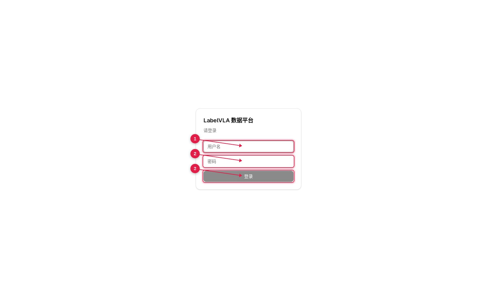
登录后在「任务管理」里找分配给自己的任务，点进任务详情。

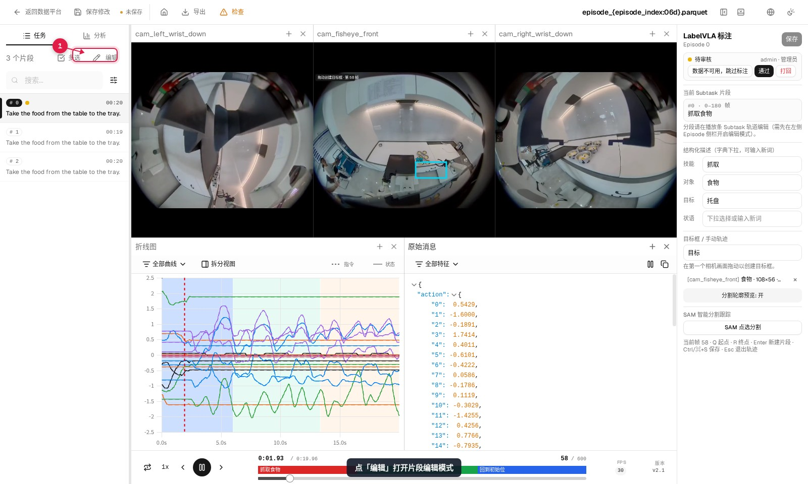
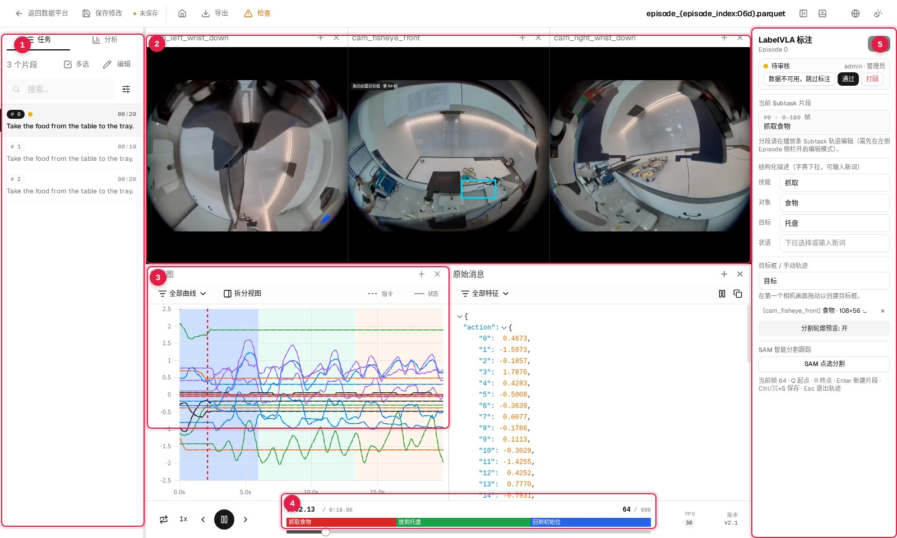
划片段
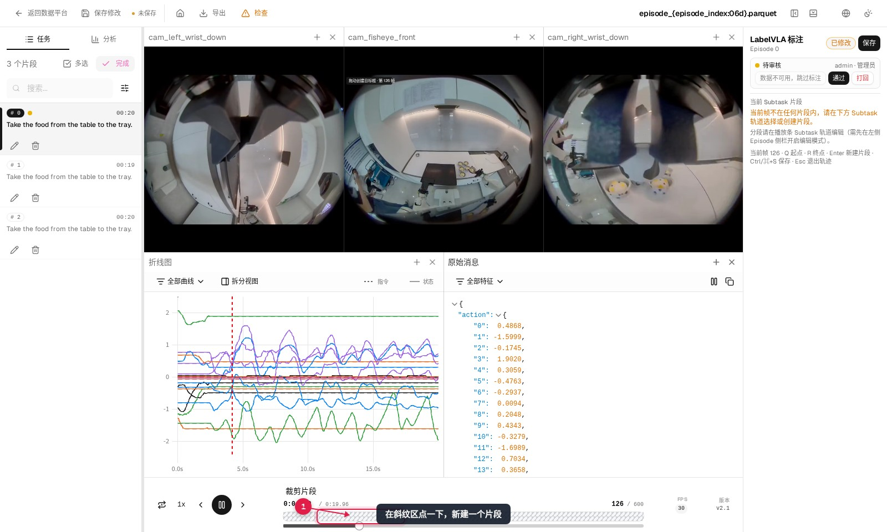
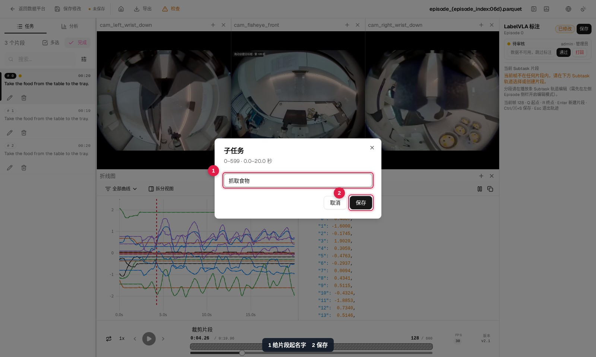
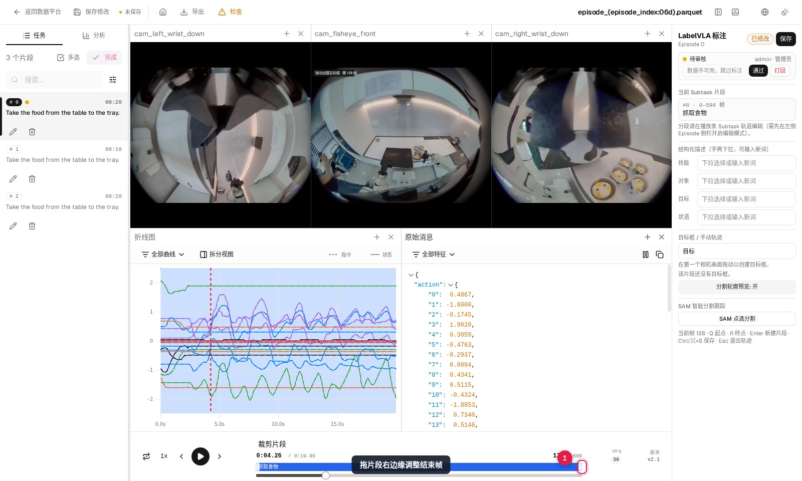
注意：界面底部提示的 Q / R / Enter 快捷键在当前版本没生效，用鼠标点轨道和拖拽边界即可。
写描述
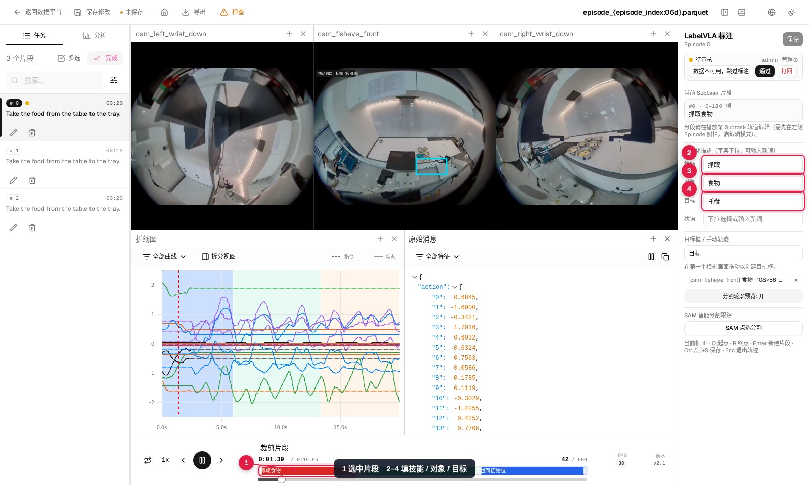
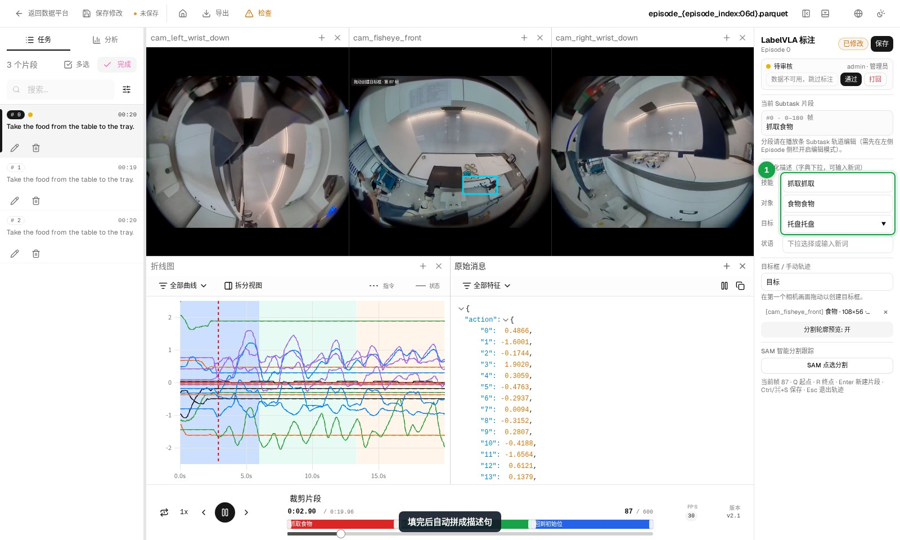
标注目标框（SAM，主要方式）
目标框主要靠 SAM 生成：在画面上点一下目标，SAM 分割出轮廓，再沿整段视频逐帧跟踪，一次就能得到整个片段的框。手动画框只用来兜底（SAM 服务不可用，或个别帧需要修正时）。
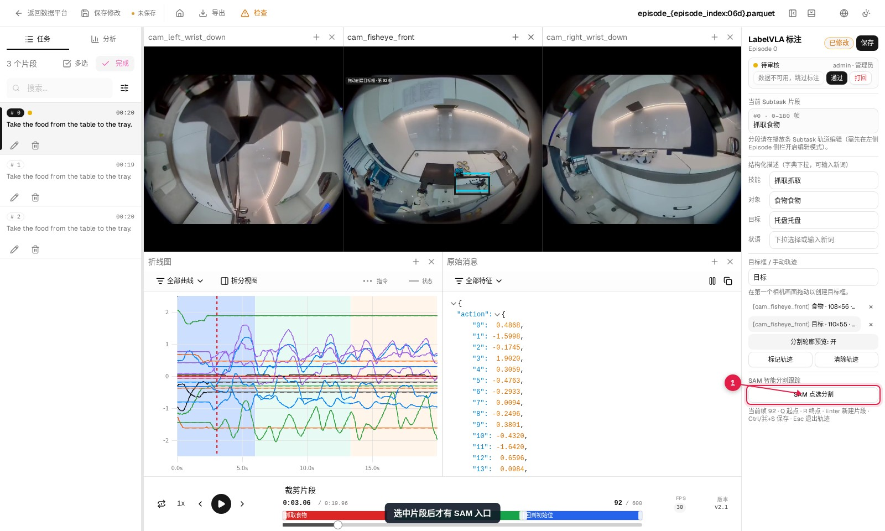
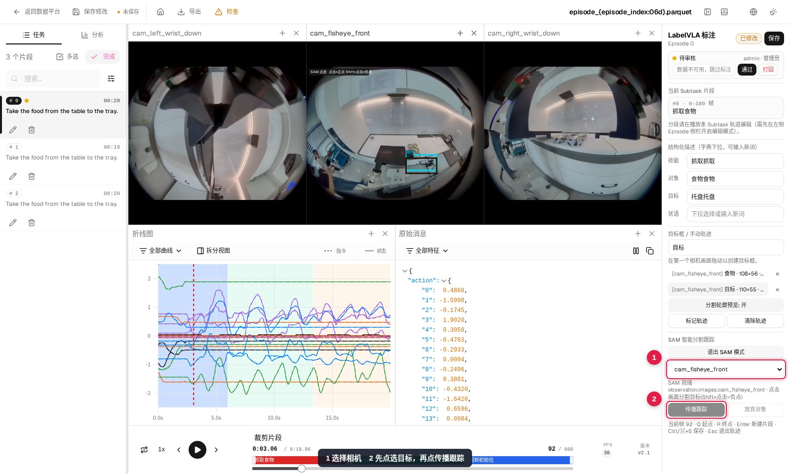
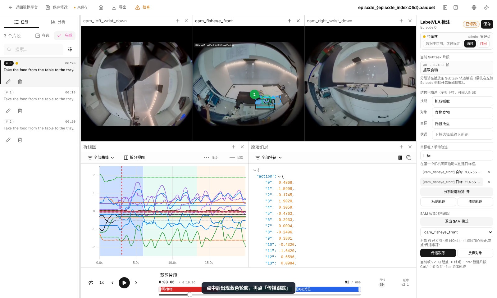
点错了可以继续加点修正：再点目标内部补正点，按住 Shift 点背景作为负点。确认无误后按 Ctrl/⌘+S 或点右上角「保存」，轮廓在后台落盘。
什么时候用手动画框：① SAM 服务没部署或加载失败；② 传播后个别帧框偏了，直接拖那个框修正；③ 目标太小、点不准。其余情况优先用 SAM，比手画快很多，也不会漏掉跟踪帧。
建议：只标关键物体（例如被拿取的那一个碗），比把所有物体都标上更省时间，程序质检也更容易通过。
返回的框特别大：没点中目标（把桌面、墙面当成了目标）。点「放弃对象」换个位置再点，或换到视野更完整的相机重试。
手动补画目标框（兜底）
SAM 服务不可用、目标太小点不准，或者传播后个别帧框偏了，才需要手动处理。
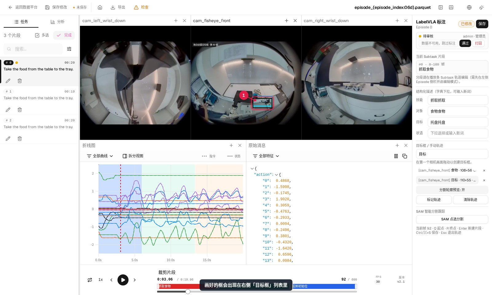
保存与提交
工作台有两个「保存」：面板右上角的「保存」只存当前 Episode，「保存修改」会先存当前 Episode，再把整个工作区写回任务版本。
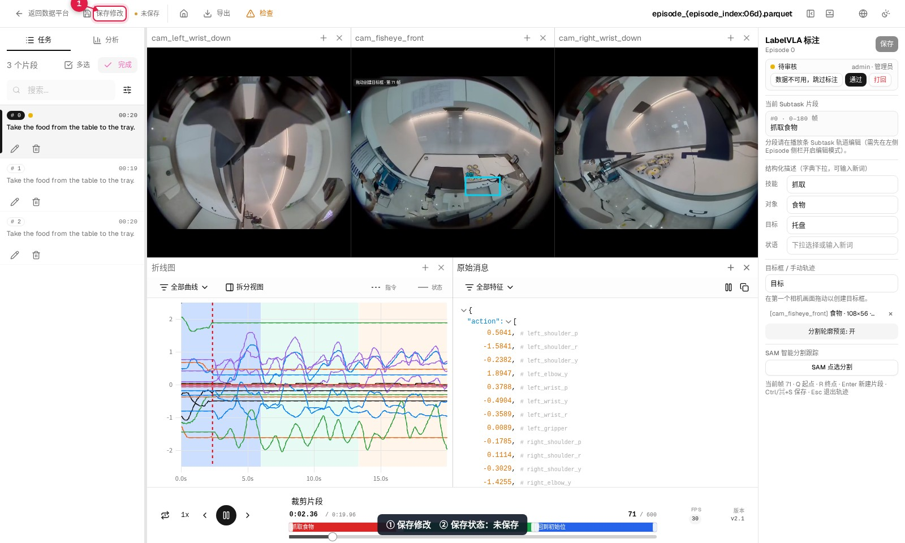
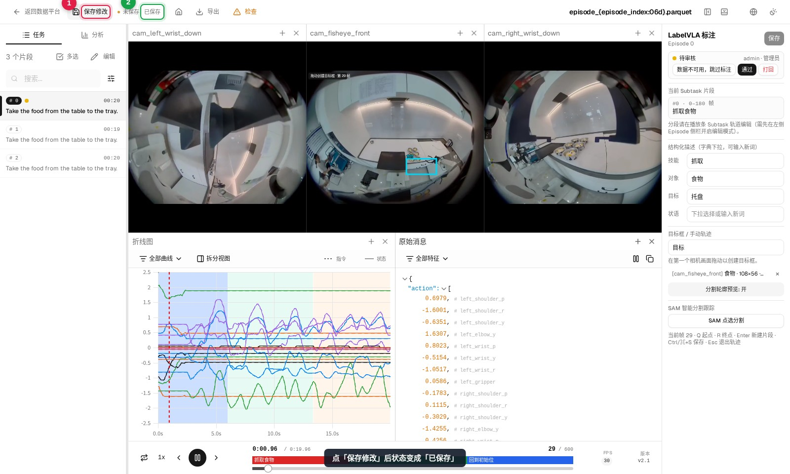
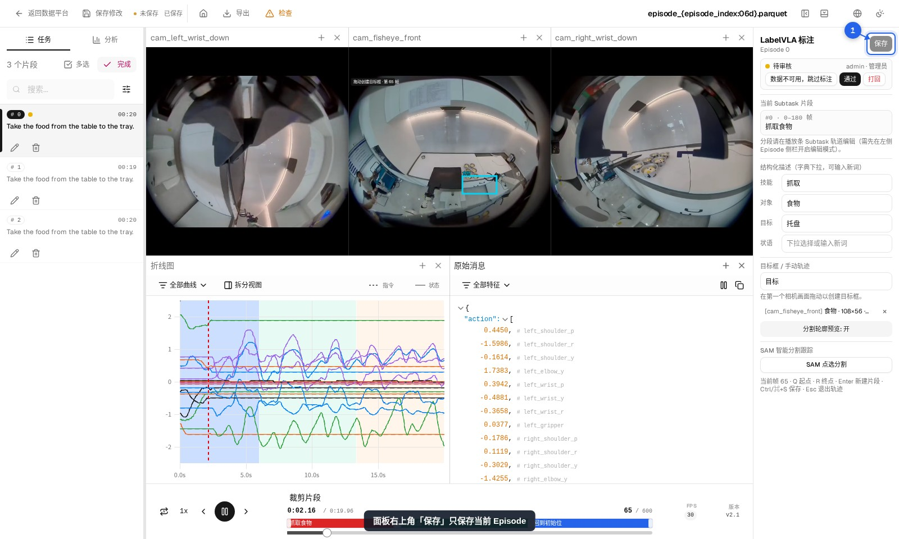
面板「保存」没点也不会丢：「保存修改」会先替你存当前这条。但没保存就换 Episode、切数据集会被拦住，并提示「请先保存上一片段的标注」。只有关掉浏览器标签页才会弹「离开此网站？」。
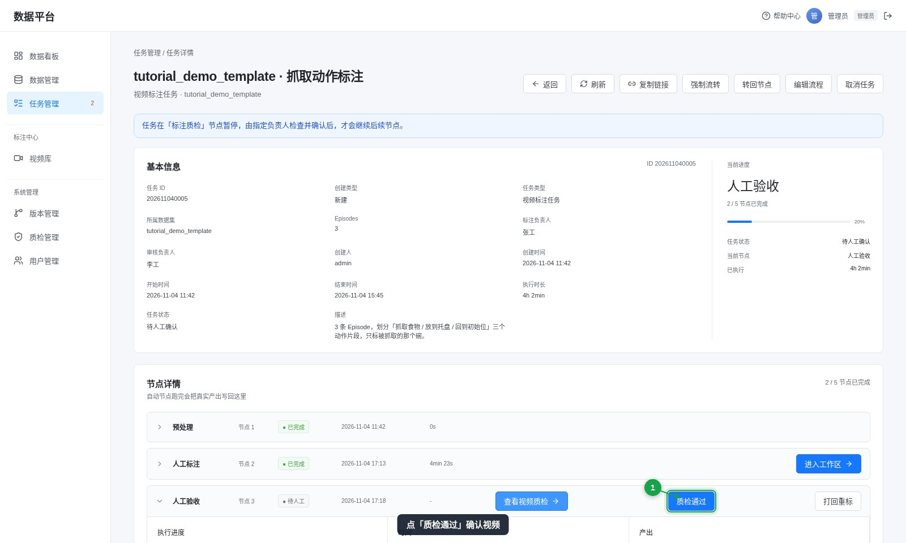
审核打回时任务退回「人工标注」，按打回原因改完点「修改后重新提交」。有未写回的改动时，「完成人工标注」是灰的。
提交前检查
| 检查项 | 怎么确认 |
|---|---|
| 每条 Episode 都标了，或填了跳过原因 | 看左侧 Episode 列表的状态标记；没标的会让程序质检失败 |
| 片段边界对得上动作 | 播放一遍，确认起止帧 |
| 描述和目标框都有 | 逐个片段选中，检查右侧面板 |
| 顶部显示「已保存」 | 没保存时「完成人工标注」是灰的 |